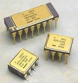
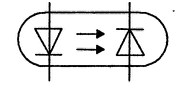

1.6.7. Оптроны
Оптрон — полупроводниковый прибор, содержащий источник излучения и приемник излучения, объединенные в одном корпусе и связанные между собой оптически, электрически или одновременно обеими связями. Очень широко распространены оптроны, у которых в качестве приемника излучения используются фоторезистор, фотодиод, фототранзистор и фототиристор.
Идея создания и применения оптронов относится к 1955 г., когда в работе Loebner E. E. "Optoelectronic devices network" была предложена целая серия приборов с оптическими и электрическими связями между элементами, что позволяло осуществлять усиление и спектральное преобразование световых сигналов, создавать приборы с двумя устойчивыми состояниями - бистабильные оптроны, оптоэлектронные устройства накопления и хранения информации логические схемы, регистры сдвига. Там же был предложен и термин "оптрон", образованный как сокращение от английского "optical-electronic device".
Обозначение фототиристора на электрических схемах → 
Принцип работы оптрона заключается в преобразовании электрического сигнала в свет, его передаче по оптическому каналу и последующем преобразовании обратно в электрический сигнал.
Практически распространение получили лишь оптроны, у которых имеется прямая оптическая связь от излучателя к фотоприемнику и, как правило, исключены все виды электрической связи между этими элементами.
По степени сложности структурной схемы среди изделий оптронной техники выделяют две группы приборов. Оптопара (говорят также "элементарный оптрон") представляет собой оптоэлектронный полупроводниковый прибор, состоящий из излучающего и фотоприемного элементов, между которыми имеется оптическая связь, обеспечивающая электрическую изоляцию между входом и выходом. Оптоэлектронная интегральная микросхема представляет собой микросхему, состоящую из одной или нескольких оптопар и электрически соединенных с ними одного или нескольких согласующих или усилительных устройств.
Таким образом, в электронной цепи такой прибор выполняет функцию элемента связи, в котором в то же время осуществлена электрическая (гальваническая) развязка входа и выхода.
Классификация оптронов
По степени интеграции:
- оптопары (или элементарные оптроны) — состоящие из двух и более элементов (в т. ч. собранные в одном корпусе);
- оптоэлектронные интегральные схемы, содержащие одну или несколько оптопар (с дополнительными компонентами, например, усилителями, или без них).
По типу оптического канала:
- с открытым оптическим каналом;
- с закрытым оптическим каналом.
По типу фотоприёмника:
- с фоторезистором;
- с фотодиодом;
- с биполярным (обычным или составным) фототранзистором;
- с фотогальваническим генератором (солнечной батарейкой), такие оптроны обычно снабжаются обычным полевым транзистором затвором которого управляет фотогальванический генератор;
- с фототиристором или фотосимистором.
Применение оптронов
Оптроны с открытым оптическим каналом, доступным для механического воздействия (перекрытия) используются как датчики во всевозможных детекторах наличия (например, детектор бумаги в принтере).
Оптроны используются для гальванической развязки цепей — передачи сигнала без передачи напряжения, для бесконтактного управления и защиты. Некоторые стандартные электрические интерфейсы, например, MIDI (Musical Instrument Digital Interface — цифровой интерфейс музыкальных инструментов) , предписывают обязательную оптронную развязку.